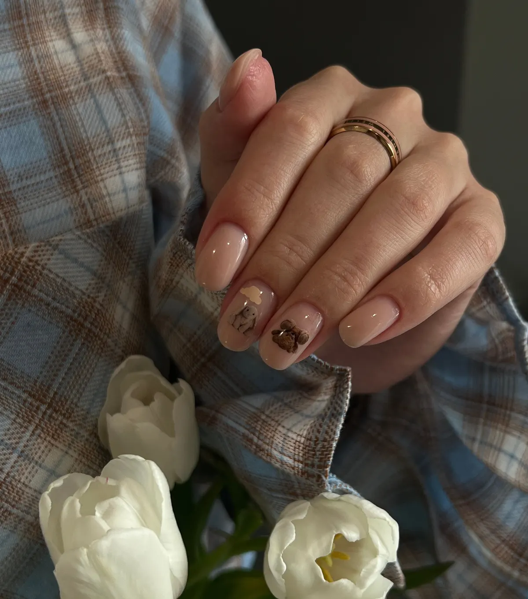
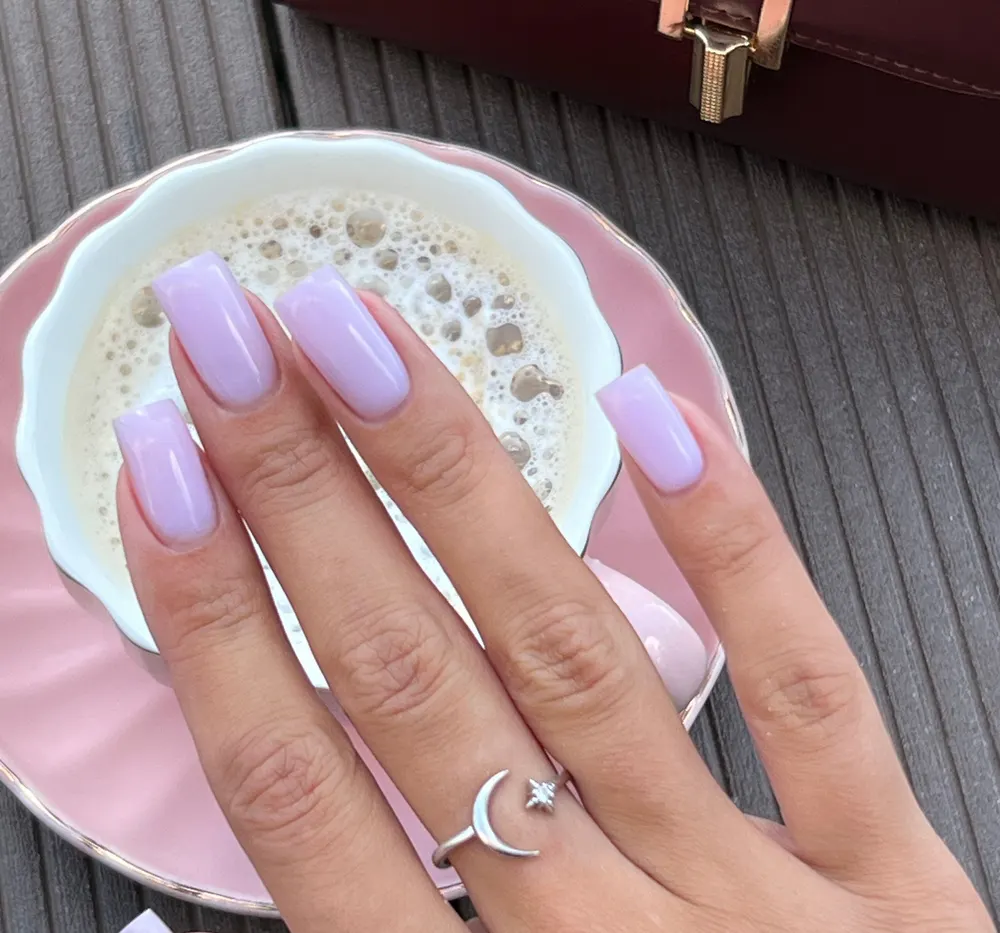
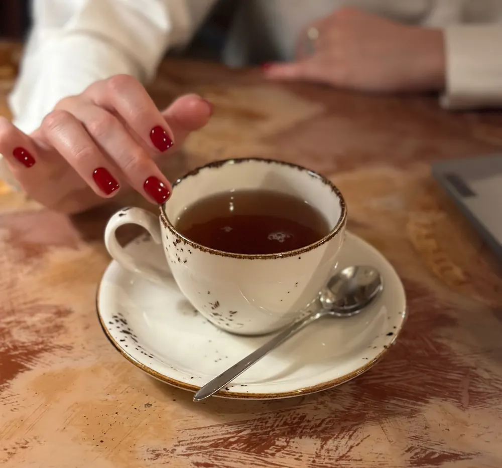
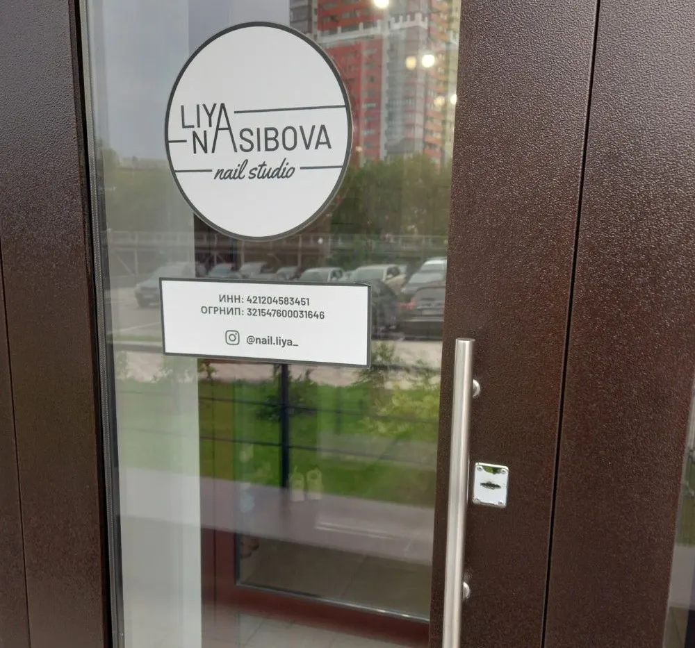

Nail studio · Ипподромская, 50
Маникюр, педикюр и подология на Ипподромской
Маникюр с покрытием от 1 300 ₽, педикюр, подология, брови и ресницы в одной студии. Можно в 4 руки – маникюр и педикюр одновременно.
- Маникюр с покрытием от 1 300 ₽
- Подология и smart-педикюр
- Ежедневно 09:00–21:00

Услуги и цены
Цены с карточки на Картах (обновлено 2 октября), «от» – зависит от категории мастера
Маникюр
- Маникюр с покрытиемот 1 300 ₽
- Японский маникюрот 800 ₽
- Маникюр без покрытияот 600 ₽
- Всё включено: наращивание с покрытием (основатель студии)3 200 ₽
- Детский маникюрот 500 ₽
Педикюр, подология, ресницы
- SMART-педикюр с покрытием2 800 ₽
- Экспресс-педикюр с покрытием2 500 ₽
- Подологический педикюр2 800 ₽
- Маникюр + полный педикюр в 4 руки5 700 ₽
- Наращивание ресниц, классика2 400 ₽
- Ламинирование ресниц + брови3 500 ₽
Основатель студии – преподаватель-инструктор, её услуги отмечены отдельно.
Как записаться
- 01
Выбираете услугу, день и время
В форме наверху страницы – сообщение уйдёт в WhatsApp.
- 02
Студия подтверждает время
Если окно занято, предложат ближайшее.
- 03
Приходите: Ипподромская улица, 50
Ежедневно 09:00–21:00.



За что хвалят в отзывах
Попадают случайно – остаются
«Достаточно попасть случайно один раз и ты с ними навсегда», – пишут в отзывах.
В 4 руки
Маникюр и педикюр одновременно – быстро и удобно.
Подолог в студии
Подологический педикюр, титановая нить при врастании ногтя.
Праздник каждый визит
Розыгрыши, подарки клиентам и сезонное меню напитков.
Отзывы с Яндекс.Карт
«Достаточно попасть случайно один раз и ты с ними навсегда»
Татьяна В. · 16 апреля
«Недавно была на маникюре у мастера Наргиз и на педикюре у мастера Елены. Всё очень понравилось! Девочки – настоящие профессионалы своего дела.»
Дарья С. · 30 июля
«Юлия -богиня маникюра, качество и скорость на высшем уровне)»
Евгения Ермакова · 9 февраля
Отзывы с карточки на Яндекс.Картах, без правок.
Частые вопросы
Почему цены «от»?
Цена зависит от категории мастера. Основатель студии – отдельный прайс.
Что делает подолог?
Подологический педикюр, работа с натоптышами, трещинами, вросшим ногтем.
Можно маникюр и педикюр сразу?
Да, в 4 руки: с покрытием – от 5 500 ₽ у основателя студии.
Где вы находитесь?
Новосибирск, Ипподромская улица, 50. Ежедневно 09:00–21:00.
Запишитесь на маникюр в Liya Nasibova
- Адрес
- Ипподромская улица, 50, Новосибирск
- Часы
- Ежедневно 09:00–21:00
- Телефон
- +7 (905) 951-52-05